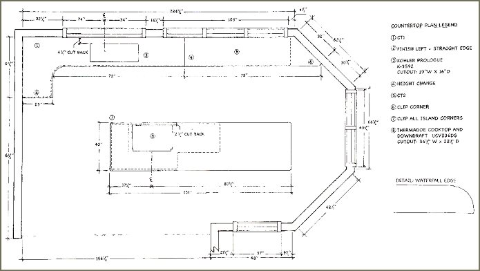
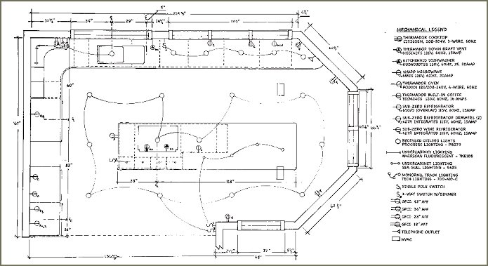
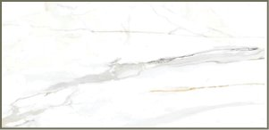
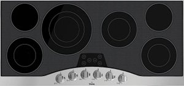
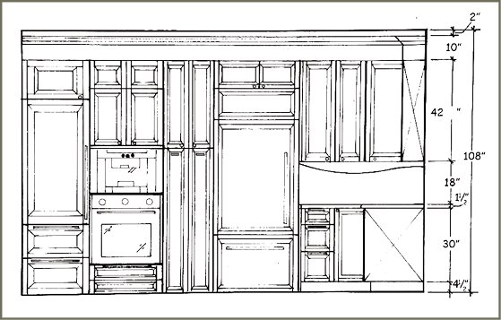
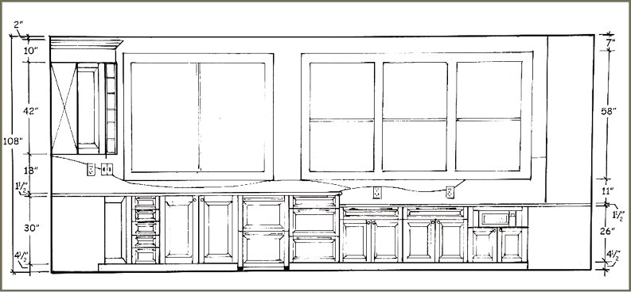
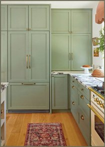
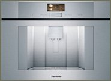
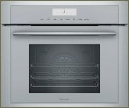

ID: Project / Kitchen
Carolina
Coast
This waterfront kitchen was designed for a couple in their mid-60s whose North Carolina beach home serves as a main place for their large family get togethers. The large kitchen design has a prime view over the sweeping beach and ocean, and has an open connection to the adjacent great room. Natural materials and coastal-inspired colors connect the kitchen to its surroundings without creating an overly themed beach aesthetic.
Design intent
Custom cabinetry integrates appliances and storage while the island provides a display space for the clients’ unique dishware and glassware collections.
Distressed cabinetry, natural stone, and subdued coastal colors reference the surrounding sand, water, and ocean landscape.
Technical plans
The kitchen was planned for multiple users with safety, storage, accessibility, universal design, and ease of use considered throughout the space. A large island supports cooking and gathering, while varied work areas and heights accommodate baking, food preparation, beverages, and everyday tasks. The floor, construction, mechanical, and countertop plans were drafted by hand as part of the project’s technical documentation.




Elevations
The interior elevations illustrate the kitchen’s custom floor-to-ceiling cabinetry and integration of appliances, including the built-in coffee machine and wall ovens. An adjacent baking area features a lower countertop designed for the client, an avid baker, with additional outlets to support countertop appliances and baking equipment. The elevations and final perspective were drawn by hand.




